悉尼的风是真大。我清楚的记得那是个夜晚，我站在 Zetland 楼下等女同学来送钥匙，风把我的帽子吹进了草丛，钥匙还没到。
那会儿我就想，这城市里应该有个人，专门帮人送钥匙、或取快递、或去超市买一包火锅底料。如果没有的话，谁来当这个人。
在我的思考下慢慢的后来就有了 Flash Man，一个听上去非常酷的跑腿项目。
A TEAM
有了这个想法之后我记得我那一晚上都没睡觉。一直在想它的可行性。在悉尼的优势和劣势等等，一晚上规划了片宏伟蓝图。然后我是说干就干，等落实好规划后，开始招兵买马哈哈。
我负责产品和整体推进。定服务范围、定价、写规则，Agent 的流程也是我先在白板上画出来，再拉着大家一遍遍改。说白一点，我就是那个天天在群里问“这个今天能好吗”的人。
小马写后端，订单、支付、派单都在他手里。我们有条规矩叫“没拍照不准点完成”，就是他写进状态机里的。他说规则只写在文档里，迟早有人不当回事。
Jacob 做前端，用户下单页、骑手端、调度台三套界面都是他做的。他最在意按钮的位置，坚持骑手骑着车也得能单手点到“到达取件点”。
Owen 负责 AI 和数据。用户说的中文怎么拆成订单字段，哪些字段是用户说的、哪些是猜的，猜得没把握的时候怎么办，都是他调出来的。后来看板上那几个指标，也是他每天晚上对着表格算出来的。
阿杰负责人。去学校群、租房群、小红书找愿意跑单的同学，面试、试跑、排班都归他管。试运营那段时间，他基本住在骑手群里。demo 里骑手名单上那个骑 e-bike 的阿杰，就是照着他写的。
最小可行性测试是我和阿杰一起做的。一开始没写一行代码，就拿一个微信群加一张 Excel 手动接单、派单、记账，先看到底有没有人愿意花十几块钱让别人送一把钥匙。确认有人用，小马和 Jacob 才开始写系统。
A RULE

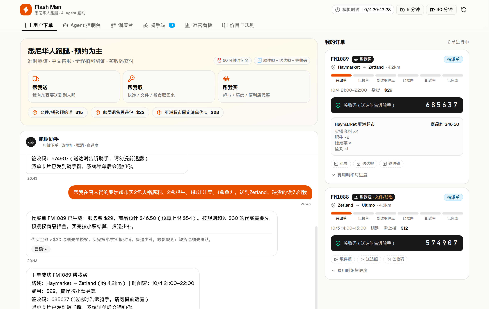
我们商量只做三件事：帮我送、帮我取、帮我买。服务圈也画得很小，就 CBD、Ultimo、Zetland、Redfern、Mascot 这一片。
价格吵了好几轮。最后定下来是起步 $12 含 3 公里，超出每公里 $2；免费等 10 分钟，之后每 10 分钟 $3；上楼、重物、夜间、跨区再加钱；代买另收 $8 服务费。另外做了三个固定价套餐：钥匙急送 $15，邮局退货 $22，亚洲超市火锅清单 $28。

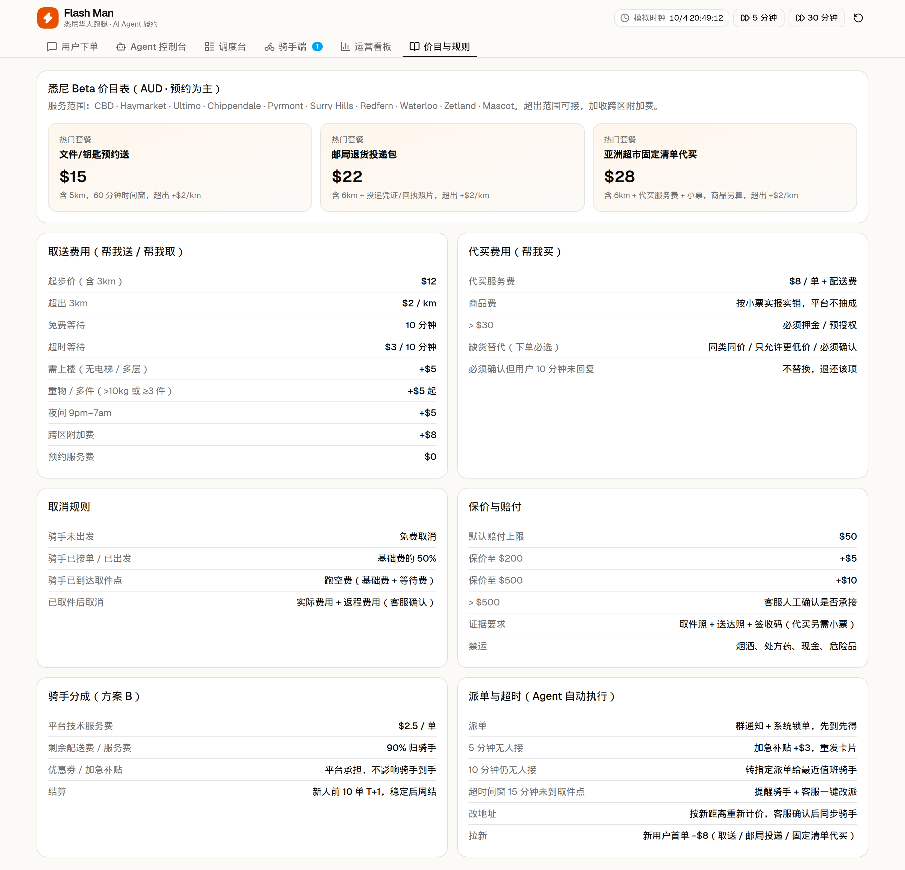
有两件事我们定得很早。第一，不承诺 30 分钟必达，只承诺 60 分钟时间窗。拼速度我们拼不过 Uber，但说好两点到三点，就两点到三点。第二，每一单都要取件照、送达照，再加一个 6 位签收码。干跑腿最怕的不是累，是事后说不清。
A SHEET
可以填表：

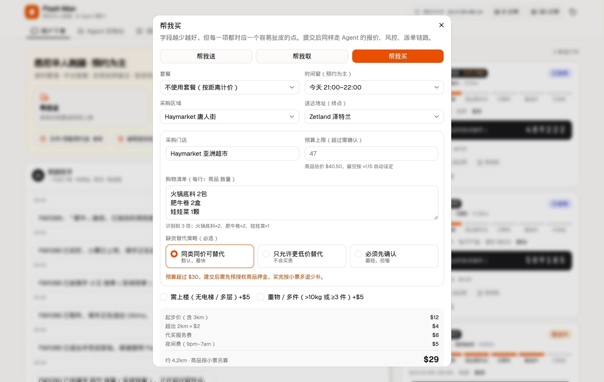
也可以直接打字，比如“帮我在唐人街的亚洲超市买 2 包火锅底料、2 盒肥牛，送到 Zetland，缺货先问我”。Agent 会先理解意思，再把事情拆成几步，然后挨个去调报价、风控、下单、派单这些工具，每做完一步就把订单状态往前推一格。

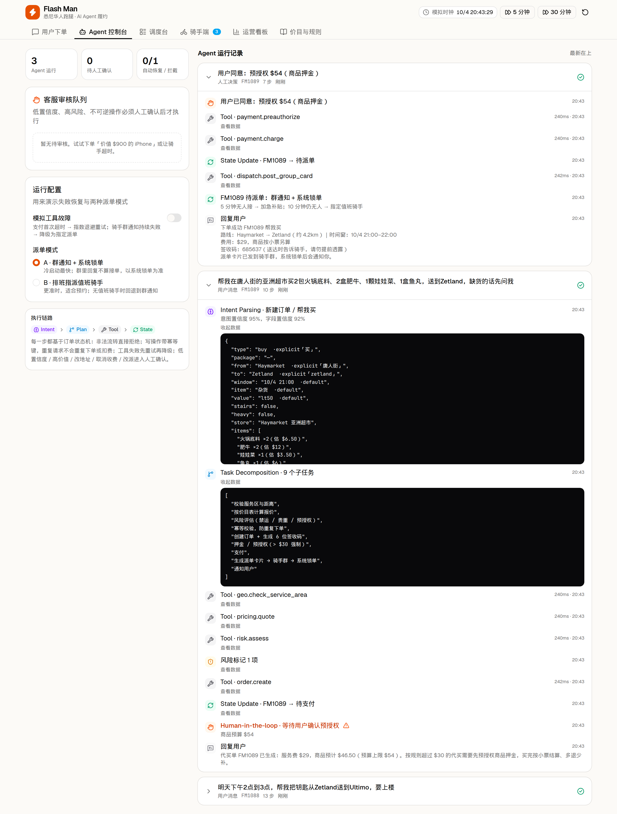
Owen 在这里加了一个我很喜欢的设计：每个字段都标上来源，是用户明说的，是推断的，还是默认值。猜的越多，置信度越低。低于 70% 它就不自己做主，转给客服看一眼。物品超过 $500 也一样，必须有人点头才往下走。

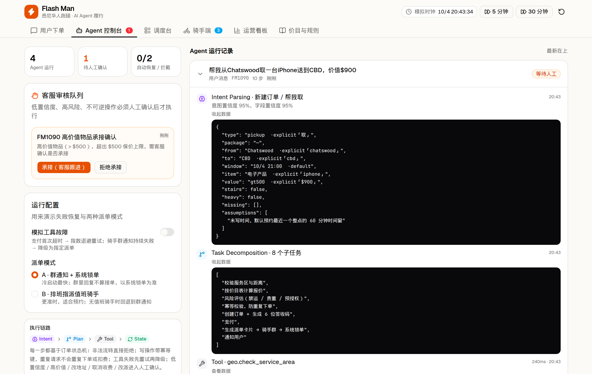
改地址、要收费的取消、换骑手、代买预授权，这几类事我们都要求有人确认。花用户钱的事，不能让程序自己拍板。
A SOLUTION
试运营那几周，支付超时、群消息发不出去这种事都遇到过。所以小马和 Owen 做了重试：支付失败就等一会儿再试；骑手群一直发不出去，就不发了，直接派给值班骑手。

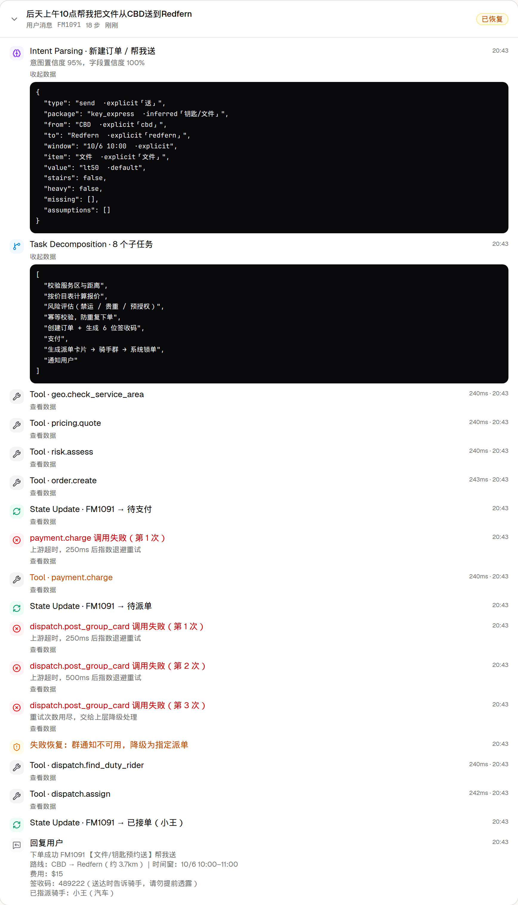
还有一个很不起眼的功能：用户手滑把同一句话发两遍，系统会认出来，不会下两单、扣两次钱。用户可能永远不知道有这个功能，但没有它，客服会被投诉淹掉。
A RIDER SIDE
骑手端就一条硬规矩：没证据，订单就不往下走。不拍取件照点不了“已取件”，签收码不对点不了“完成”。

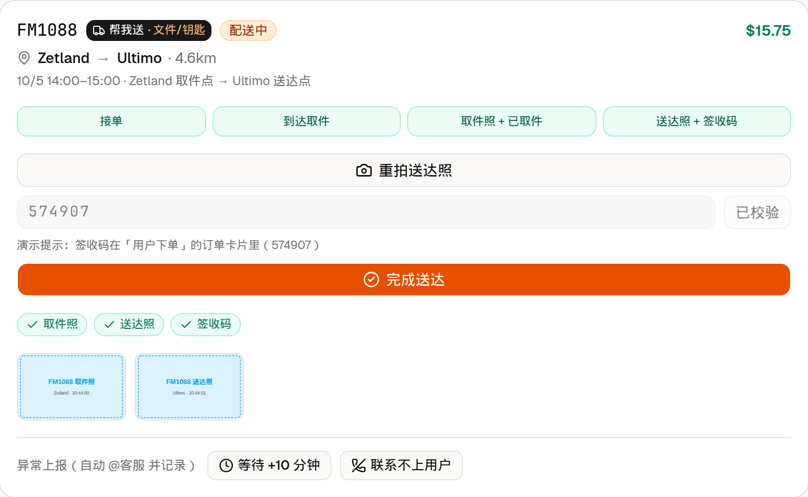
代买最容易吵架，所以用户下单时就得选好缺货怎么处理：换同价的、只换更便宜的，还是必须先问我。骑手在超市点一下“缺货”，系统就照着规则办；要是选了“先问我”，10 分钟没回复就不买，钱退回去。

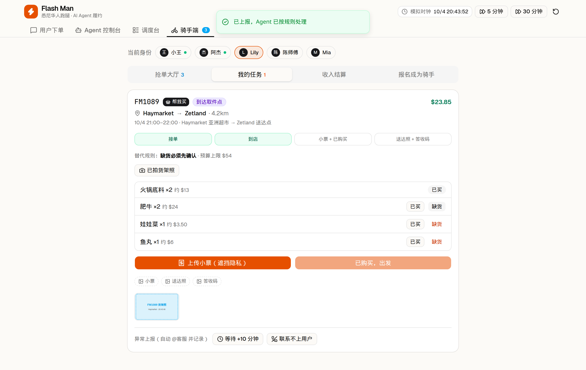

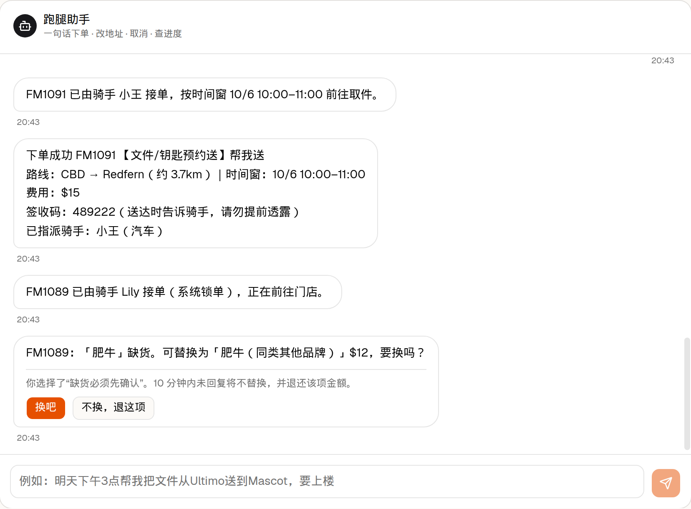
抢单的规矩是阿杰定的：群里回“1”不算，系统里锁上才算。两个人同一秒点接单，只有一个能抢到。

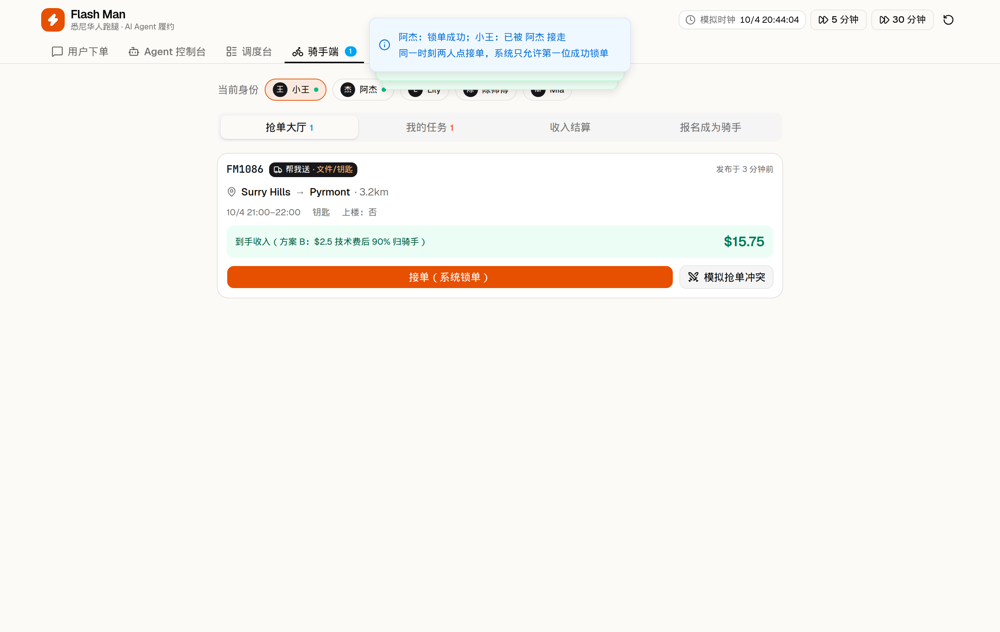
A CONSOLE
刚起步的时候，派单还是靠微信群最快。我们就老老实实用“群里通知、系统确认”这个办法。5 分钟没人接，自动加 $3 补贴再发一次；再过 5 分钟还没人，直接派给值班的人；骑手晚了 15 分钟还没到取件点，就提醒客服考虑换人。

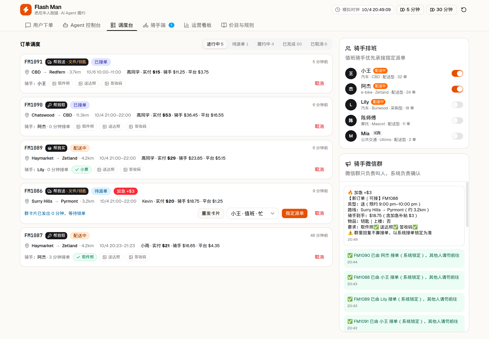
Owen 定了 8 个每天要看的数：接单成功率、派单时长、准时率、取消率、客诉率、证据完整率、单均毛利、7 天复购率。

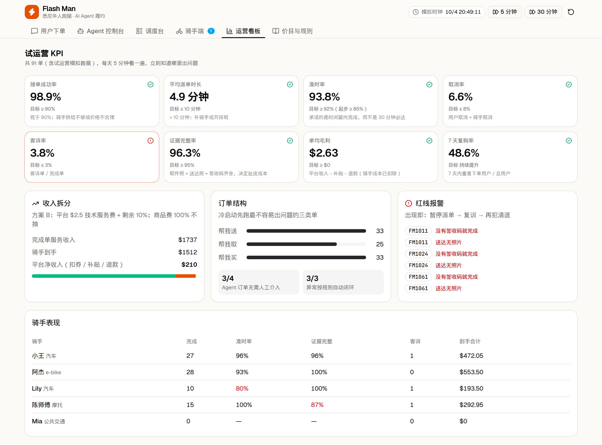
（截图里是演示用的模拟数据。）
让我们几个半夜睡不着的，是单均毛利那一格。
Recruit
阿杰的报名表里有两道题，比如“用户临时改地址，你已经到了取件点，怎么办？”。回答“我自己跟用户谈加价”的直接不要；回答“先报客服，不私自加价”的，安排试跑两单。

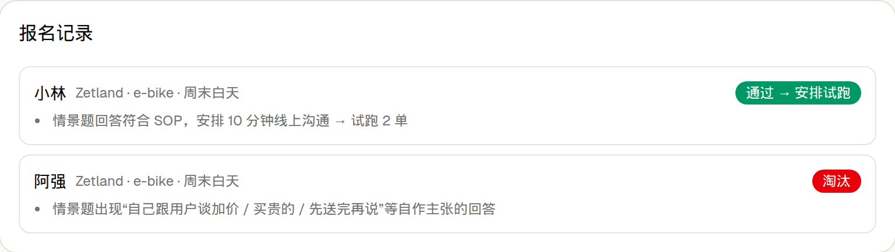
我在整理这篇文章时还发现了一个 bug：筛选程序看到“不私自加价”里有“加价”两个字，就把人刷掉了。阿杰看到截图笑了半天，说他面试的时候可没这么武断。
为什么没在悉尼跑起来
一句话：账算不过来。
一单 $18，骑手到手大概 $14。可一单从出发到送完，加上等人、找车位，四五十分钟是常事，算下来时薪比澳洲最低工资低一截，骑手更愿意去开 Uber Eats。平台每单剩两三块，要每小时稳定十几单才养得起一个兼职客服。钥匙和退货一个月都用不上一次，代买又跟华人外卖平台、超市自己的配送撞个正着。再加上保险、消费者法、留学生打工时长限制，哪一样都比写代码麻烦。
复盘那天我们五个坐在 Broadway 的一家奶茶店里，小马说了句挺扎心的话：我们把一千单的系统做好了，可我们只有几十单。
我现在也这么看。Agent 能让一个已经在转的生意转得更顺，但它没法替你找来订单。要是重来，我们会先去接华人餐馆、蛋糕店、花店那种固定时段、能顺路的配送，或者开学季搬家、宜家代买组装这种一单就上百块的活。先让账算得过来，再谈 AI。

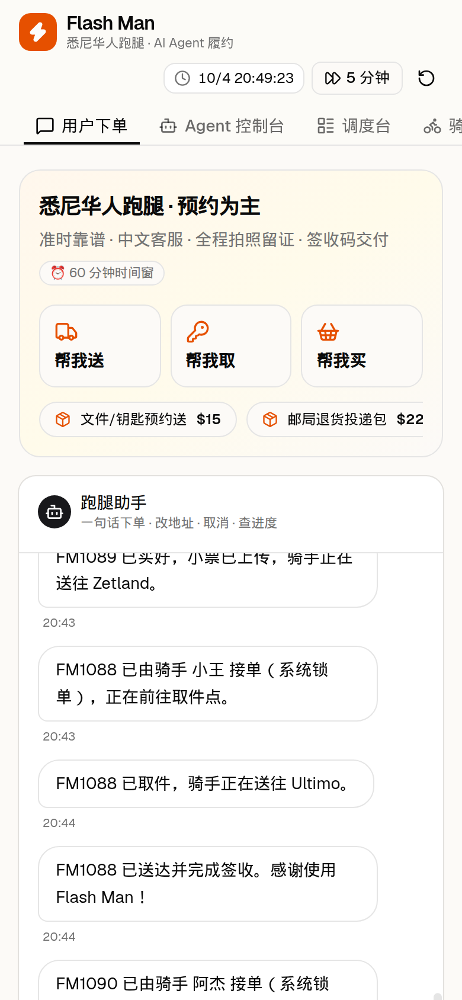
END
所以 Flash Man 还在吗？
在，在一个 localStorage 里，每次刷新都重新开张。骑手从不迟到，除非我手欠点了“快进 5 分钟”。客户永远姓高，永远在买火锅。
没亏什么钱，没吵散伙，五个人各自多会了点东西：小马会写状态机了，Jacob 会做三端界面了，Owen 会调 Agent 了，阿杰能在半小时里面试完三个骑手，我学会了在白板上画完流程以后先算账。
悉尼的风还在刮。钥匙，我们自己送。
下一单再见。